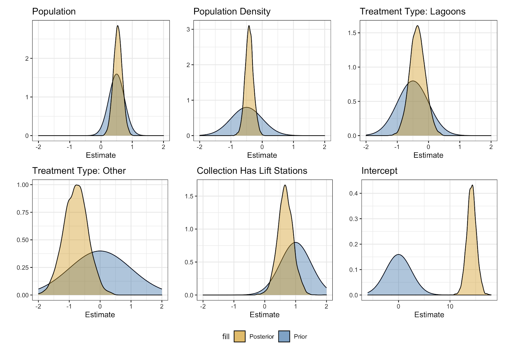

This past summer, I worked on a project at Oregon State University’s Data Science for the Public Good Program. Below is the technical report from our work and a link to the web application we created.
Students: Jakob Oetinger, Amanda Reding, Grayson White
Mentor: Dr. Christine Kelly
Sponsor: Oregon Association of Water Utilities
Web Application: https://graysonwhite.shinyapps.io/oregon-wwtps/
Characterization & Bayesian Cost Modeling for Small Scale Wastewater Facilities in Oregon
Abstract:
Our project first characterizes small scale (<1 MGD) wastewater treatment plants in Oregon by creating a web-based application with data visualizations, maps, and educational materials regarding wastewater treatment technologies and transitioning from decentralized to centralized systems. We then fit a linear cost model using Bayesian methods to characterize the distributions of our explanatory variables in the model and to help city planners determine an estimate for the cost of their potential wastewater treatment plant. This model not only estimates the cost of centralized wastewater treatment projects, but it also allows for intuitive interpretation of the effect of explanatory variables on the final cost of a wastewater treatment plant through visualizations of posterior distributions.
Introduction:
Centralized municipal wastewater treatment systems in Oregon have not been characterized well in any central source and data on the subject is spread thinly throughout many organizations. This problem is especially persistent when it comes to small-scale systems that serve rural communities, and there is a lack of information on costs in particular. This type of basic information, what systems are in use and how much they cost to implement, is potentially valuable to small communities that are considering the transition to centralized wastewater treatment, or to any stakeholder who would like to know more about small scale wastewater treatment options in Oregon. To help understand the potential costs of wastewater treatment systems in greater detail, existing literature has proposed various models to predict costs based on a variety of explanatory variables (Hernandez-Sancho et al., 2011; Jafarinejad, 2017; Niu et al., 2016; Pinheiro et al, 2018). However, these studies model wastewater treatment costs at a wide range of scales, including much larger than the small-scale rural systems relevant to this research. Additionally, the majority of these models are concerned with wastewater treatment in countries besides the United States.
Methodology:
Information was obtained from several sources in an attempt to construct a comprehensive data set on all permitted wastewater treatment plants in the state of Oregon. The state Department of Environmental Quality keeps a digital record of all NPDES permits, which regulate plants that discharge to surface waters. From this list only municipal plants, which process less than one million gallons of wastewater per day (1 MGD) were selected. Unfortunately, the DEQ records for WPCF permits, which regulate plants that discharge to land, are incomplete. All WPCF plants that fit the above criteria and for which information was available were included as well, bringing the total number of observations in our characterization dataset to 183. This information was compiled and presented in the form of data visualization tools that stakeholders can access as a website to learn about typical wastewater treatment systems of this scale in the state. Data on the cost of wastewater treatment were obtained from the USDA, which provides funding and loan programs to rural communities to support wastewater treatment projects. This dataset consists of all Oregon projects (both NPDES and WPCF) funded or partially funded by USDA loans or grants since 2004, and includes relevant variables such as construction cost, total cost, treatment technology, etc. Several previous studies (Hernandez-Sancho, 2011; Jafarinejad, 2017; Niu, 2016; Pinheiro 2018) have proposed similar cost models for centralized wastewater treatment projects which relate capital costs to explanatory variables such as scale, treatment level, technology, etc. We use the following model form which is used broadly in the literature to fit a log transformed linear model:
$$
\log(C_i) = \beta_0 + \beta_1\log(x_1) + \beta_2 \log(x_2) + \beta_3 x_3 + \beta_4 x_4 + \epsilon_i
$$
Where Ci is the total cost of a wastewater treatment project. Examples in the literature were able to estimate model parameters using ordinary least squares solutions from detailed datasets containing hundreds of observations. Because of the small Oregon sample, and because of the previous literature which has addressed this problem, a Bayesian approach was undertaken wherein knowledge about similar models is used to inform prior probability distributions for each of the model parameters. These prior distributions are then updated based on the observed data to arrive at a set of posterior parameter distributions. Prior distributions for the parameters were selected to be from the normal distribution, with mean and variance determined based on results of previous modelling papers. Implementation of this model was performed in R, using the packages {tidymodels} and {rstan} to carry out the Bayesian estimation and model fitting. Results and our prior distributions are shown in Figure 1.
 Figure 1. Prior and posterior probability distributions for each of the parameters corresponding to explanatory variables in the model. These distributions illustrate the probable range of values for each model parameter.
This model was also incorporated into the aforementioned web tool to allow stakeholders to input the characteristics of their own community and estimate potential wastewater treatment costs.
Conclusion:
Along with the data visualization and cost modeling tools, the website created to present this research also includes educational materials on wastewater treatment as a whole, as well as information on planning a wastewater treatment project and funding resources. The goal of this tool is to serve as a central resource for a rural community stakeholder to learn about small scale wastewater treatment options and take the preliminary steps towards planning a new project, regardless of their level of expertise in wastewater treatment. In addition to this community-based goal, this research aimed to construct a cost model for small scale centralized wastewater treatment projects in Oregon. While the final model has room for improvement in terms of predictive accuracy, it is informative when considering the variables that play a role in determining the cost of a wastewater treatment project. Beyond constructing this model for the sake of estimation, this research also serves as an example application of the Bayesian linear regression framework to cost modelling in engineering and proves it to be an effective option.